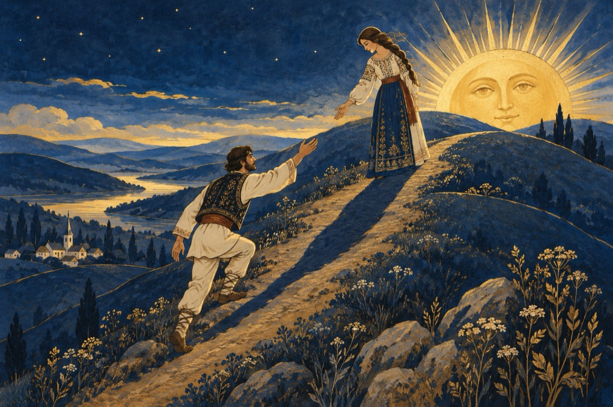

Iubita mea
După-a ta umbră iubito
Am urcat încet spre tine
La-nceput în incognito
Prin încercări cautine.
Tot urcând, urcând, urcând
Ți-am descoperit făptura.
Și în preajmă-ți ajungând,
Mi-ai confirmat aventura!
După mersul umbrei tale
Și parfumul ce-l lăsai
Am decis să-ți ies în cale
Să nu te-aștepți la vreun crai!
Eu sunt eu așa cum sunt,
Un alergător de cursă
Iubitor pe-acest pământ
Și aștept să am o șansă.
Eu alerg după iubire
Trubadur neodihnit
Și constat cu bucurie
Iubito că te-am găsit!
Umbra ta de fapt ești tu,
După urma ce-ai lăsat.
Iară eu am un atu
Pân' la tine am urcat!
Și acuma draga mea
N-așteptăm un asfințit.
Ci din contra s-ar cădea
Pentru noi, un nou răsărit
Vasile Groza
Apare și în: Poezii de suflet.